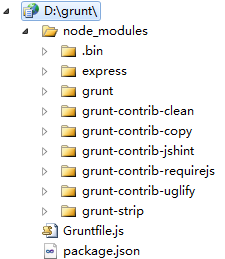
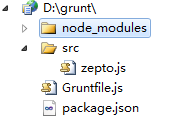
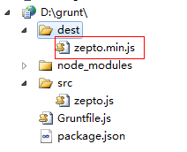
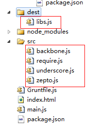
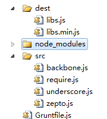
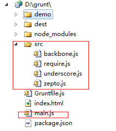
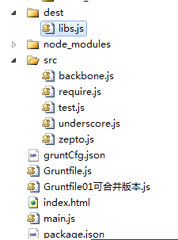
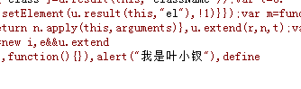

前言
以现在前端js激增的态势，一个项目下来几十个js文件轻轻松松
对于复杂一点的单页应用来说，文件上百简直是家常便饭，那么这个时候我们的js文件应该怎么处理呢？
另外，对于css文件，又该如何处理呢？？
这些都是我们实际工作中要遇到的问题，比如我们现在框架使用zepto、backbone、underscore
我们要如何将他们合成一个libs文件，这都是令人头疼的问题
但是grunt的出现却让这些事情变得优雅起来！
简单一键，打包结束，尼玛不是不可能啊！
grunt
是一套前端自动化工具，一个基于nodeJs的命令行工具，一般用于：
① 压缩文件
② 合并文件
③ 简单语法检查
对于其他用法，我还不太清楚，我们这里简单介绍下grunt的压缩、合并文件
初学，有误请包涵
准备阶段
1、nodeJs环境
因为grunt是基于nodeJs的，所以首先各位需要安装nodeJS环境，这块我们便不管了
http://www.cnblogs.com/yexiaochai/p/3527418.html
2、安装grunt
有了nodeJs环境后，我们便可以开始搞grunt了，因为我们可能在任何目录下运行打包程序，所以我们需要安装CLI
官方推荐在全局安装CLI（grunt的命令行接口）
npm install -g grunt-cli
这条命令将会把grunt命令植入系统路径，这样就能在任意目录运行他，原因是
每次运行grunt时，它都会使用node的require查找本地是否安装grunt，如果找到CLI便加载这个本地grunt库
然后应用我们项目中的GruntFile配置，并执行任务
PS：这段先不要管，安装完了往下看
实例学习：打包zepto
一些东西说多了都是泪，直接先上实例吧，实例结束后再说其它的
首先在D盘新建一个项目（文件夹就好）
在里面新增两个文件（不要问为什么，搞进去先）
① package.json
{ "name": "demo", "file": "zepto", "version": "0.1.0", "description": "demo", "license": "MIT", "devDependencies": { "grunt": "~0.4.1", "grunt-contrib-jshint": "~0.6.3", "grunt-contrib-uglify": "~0.2.1", "grunt-contrib-requirejs": "~0.4.1", "grunt-contrib-copy": "~0.4.1", "grunt-contrib-clean": "~0.5.0", "grunt-strip": "~0.2.1" }, "dependencies": { "express": "3.x" } }
② Gruntfile.js
完了我们需要在grunt目录下执行 npm install将相关的文件下载下来：
$ cd d:
$ cd grunt
然后我们的目录就会多一点东西：

多了很多东西，先别管事干什么的，我们后面都会用到，这个时候在目录下新建src文件夹，并且搞一个zepto进去

然后在Gruntfile中新增以下代码（先别管，增加再说）
module.exports = function (grunt) { // 项目配置 grunt.initConfig({ pkg: grunt.file.readJSON('package.json'), uglify: { options: { banner: '/*! <%= pkg.file %> <%= grunt.template.today("yyyy-mm-dd") %> */\n' }, build: { src: 'src/<%=pkg.file %>.js', dest: 'dest/<%= pkg.file %>.min.js' } } }); // 加载提供"uglify"任务的插件 grunt.loadNpmTasks('grunt-contrib-uglify'); // 默认任务 grunt.registerTask('default', ['uglify']); }
然后运行 grunt命令后
grunt

嗯嗯，多了一个文件，并且是压缩的，不差！！！第一步结束
认识Gruntdile与package.json
不出意外，每一个gurnt都会需要这两个文件，并且很可能就只有这两个文件（复杂的情况有所不同）
package.json
这个文件用来存储npm模块的依赖项（比如我们的打包若是依赖requireJS的插件，这里就需要配置）
然后，我们会在里面配置一些不一样的信息，比如我们上面的file，这些数据都会放到package中
对于package的灵活配置，我们会在后面提到
Gruntfile
这个文件尤其关键，他一般干两件事情：
① 读取package信息
② 插件加载、注册任务，运行任务（grunt对外的接口全部写在这里面）
Gruntfile一般由四个部分组成
① 包装函数
这个包装函数没什么东西，意思就是我们所有的代码必须放到这个函数里面
module.exports = function (grunt) { //你的代码 }
这个不用知道为什么，直接将代码放入即可
② 项目/任务配置
我们在Gruntfile一般第一个用到的就是initConfig方法配置依赖信息
pkg: grunt.file.readJSON('package.json')
这里的 grunt.file.readJSON就会将我们的配置文件读出，并且转换为json对象
然后我们在后面的地方就可以采用pkg.XXX的方式访问其中的数据了
值得注意的是这里使用的是underscore模板引擎，所以你在这里可以写很多东西
uglify是一个插件的，我们在package依赖项进行了配置，这个时候我们为系统配置了一个任务
uglify（压缩），他会干这几个事情：
① 在src中找到zepto进行压缩（具体名字在package中找到）
② 找到dest目录，没有就新建，然后将压缩文件搞进去
③ 在上面加几个描述语言
这个任务配置其实就是一个方法接口调用，按照规范来就好，暂时不予关注，内幕后期来
这里只是定义了相关参数，但是并未加载实际函数，所以后面马上就有一句：
grunt.loadNpmTasks('grunt-contrib-uglify');
用于加载相关插件
最后注册一个自定义任务（其实也是默认任务），所以我们下面的命令行是等效的：
grunt == grunt uglify
至此，我们就简单解析了一番grunt的整个操作，下面来合并文件的例子
合并文件
合并文件依赖于grunt-contrib-concat插件，所以我们的package依赖项要新增一项
"devDependencies": { "grunt": "~0.4.1", "grunt-contrib-jshint": "~0.6.3", "grunt-contrib-concat": "~0.3.0", "grunt-contrib-uglify": "~0.2.1", "grunt-contrib-requirejs": "~0.4.1", "grunt-contrib-copy": "~0.4.1", "grunt-contrib-clean": "~0.5.0", "grunt-strip": "~0.2.1" },
然后再将代码写成这个样子
module.exports = function (grunt) { // 项目配置 grunt.initConfig({ pkg: grunt.file.readJSON('package.json'), concat: { options: { separator: ';' }, dist: { src: ['src/zepto.js', 'src/underscore.js', 'src/backbone.js'], dest: 'dest/libs.js' } } }); grunt.loadNpmTasks('grunt-contrib-concat'); // 默认任务 grunt.registerTask('default', ['concat']); }
运行后，神奇的一幕发生了：

三个文件被压缩成了一个，但是没有压缩，所以，我们这里再加一步操作，将之压缩后再合并
module.exports = function (grunt) { // 项目配置 grunt.initConfig({ pkg: grunt.file.readJSON('package.json'), concat: { options: { separator: ';' }, dist: { src: ['src/zepto.js', 'src/underscore.js', 'src/backbone.js'], dest: 'dest/libs.js' } }, uglify: { build: { src: 'dest/libs.js', dest: 'dest/libs.min.js' } } }); grunt.loadNpmTasks('grunt-contrib-uglify'); grunt.loadNpmTasks('grunt-contrib-concat'); // 默认任务 grunt.registerTask('default', ['concat', 'uglify']); }
我这里的做法是先合并形成一个libs，然后再将libs压缩成libs.min.js

所以我们这里换个做法，先压缩再合并，其实unglify已经干了这些事情了
module.exports = function (grunt) { // 项目配置 grunt.initConfig({ pkg: grunt.file.readJSON('package.json'), uglify: { "my_target": { "files": { 'dest/libs.min.js': ['src/zepto.js', 'src/underscore.js', 'src/backbone.js'] } } } }); grunt.loadNpmTasks('grunt-contrib-uglify'); // 默认任务 grunt.registerTask('default', ['uglify']); }
所以，我们就暂时不去关注concat了
最后，今天时间不早了，我们最后研究下grunt配合require于是便结束今天的学习吧
合并requireJS管理的文件
有了前面基础后，我们来干一件平时很头疼的事情，便是将require管理的所有js文件给压缩了合并为一个文件
首先我们建立一个简单的程序，里面使用了zepto、backbone、underscore（事实上我并未使用什么）

在main.js中新增代码：
require.config({ baseUrl: '', shim: { $: { exports: 'zepto' }, _: { exports: '_' }, B: { deps: [ '_', '$' ], exports: 'Backbone' } }, paths: { '$': 'src/zepto', '_': 'src/underscore', 'B': 'src/backbone' } }); requirejs(['B'], function (b) { });
这样的话运行会自动加载几个文件，我们现在希望将之合并为一个libs.js该怎么干呢？？？
我们这里使用自定义任务方法来做，因为我们好像没有介绍他
要使用requireJS相关需要插件
grunt.loadNpmTasks('grunt-contrib-requirejs');
因为我们以后可能存在配置文件存在各个项目文件的情况，所以我们这里将requireJs相关的配置放入gruntCfg.json中
这样我们的package.json就没有什么实际意义了：
{ "name": "demo", "version": "0.1.0", "description": "demo", "license": "MIT", "devDependencies": { "grunt": "~0.4.1", "grunt-contrib-jshint": "~0.6.3", "grunt-contrib-concat": "~0.3.0", "grunt-contrib-uglify": "~0.2.1", "grunt-contrib-requirejs": "~0.4.1", "grunt-contrib-copy": "~0.4.1", "grunt-contrib-clean": "~0.5.0", "grunt-strip": "~0.2.1" }, "dependencies": { "express": "3.x" } }
我们这里设置的require相关的grunt配置文件如下（gruntCfg.json）：
{ "requirejs": { "main": { "options": { "baseUrl": "", "paths": { "$": "src/zepto", "_": "src/underscore", "B": "src/backbone", "Test": "src/Test" }, "web": { "include": [ "$", "_", "B", "Test" ], "out": "dest/libs.js" } } } } }
这里我们要打包这些文件搞到dest的libs.js文件中，这个文件照做就行，最后核心代码如下：
module.exports = function (grunt) { grunt.loadNpmTasks('grunt-contrib-requirejs'); //为了介绍自定义任务搞了一个这个 grunt.registerTask('build', 'require demo', function () { //任务列表 var tasks = ['requirejs']; //源码文件 var srcDir = 'src'; //目标文件 var destDir = 'dest'; //设置参数 grunt.config.set('config', { srcDir: srcDir, destDir: destDir }); //设置requireJs的信息 var taskCfg = grunt.file.readJSON('gruntCfg.json'); var options = taskCfg.requirejs.main.options, platformCfg = options.web, includes = platformCfg.include, paths = options.paths; var pos = -1; var requireTask = taskCfg.requirejs; options.path = paths; options.out = platformCfg.out; options.include = includes; //运行任务 grunt.task.run(tasks); grunt.config.set("requirejs", requireTask); }); }
搞完了运行就好：grunt build
grunt build


最后发现叶小钗三字，我就放心了，安全！！！！！！
下集预告
1 HTML文件打包
2 样式文件打包
3 移动打包文件
我们的开发版本与使用版本可能不在一个位置哦
4 分支处理
不同分支打包
5 native包与HTML5包
在HTML5嵌入webview的时代，我们当然存在一次打包既要形成网站文件也要形成app文件
6 分频道打包
当然可能存在分频道分分支打包的情况
今日到此为止，待续......